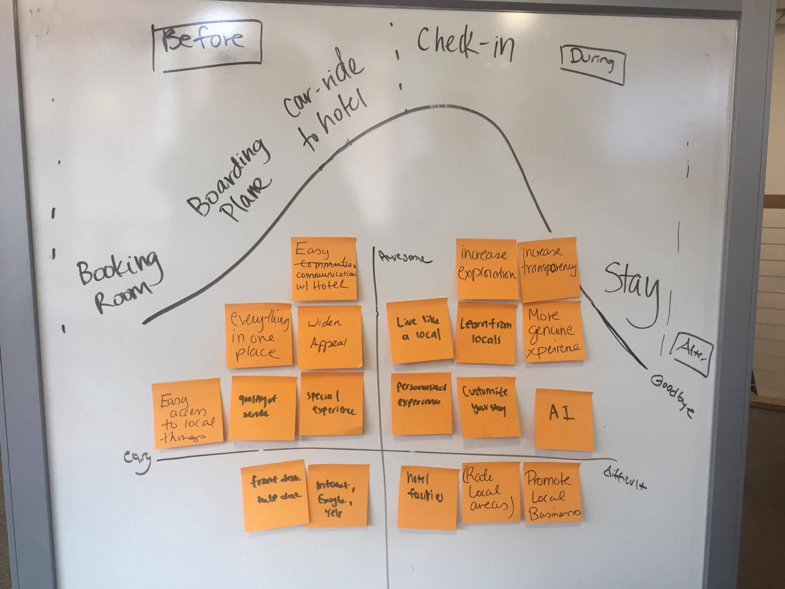
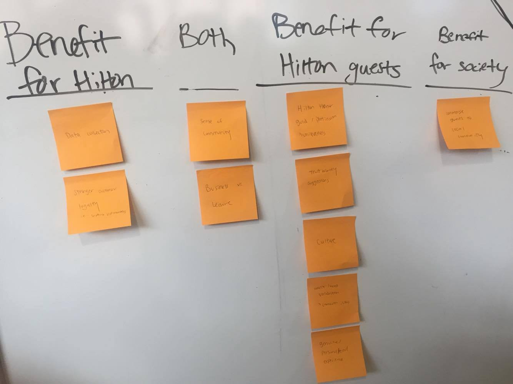
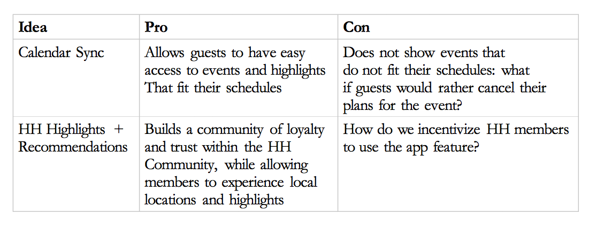
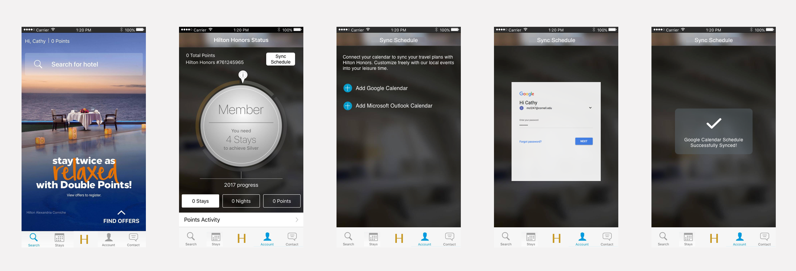
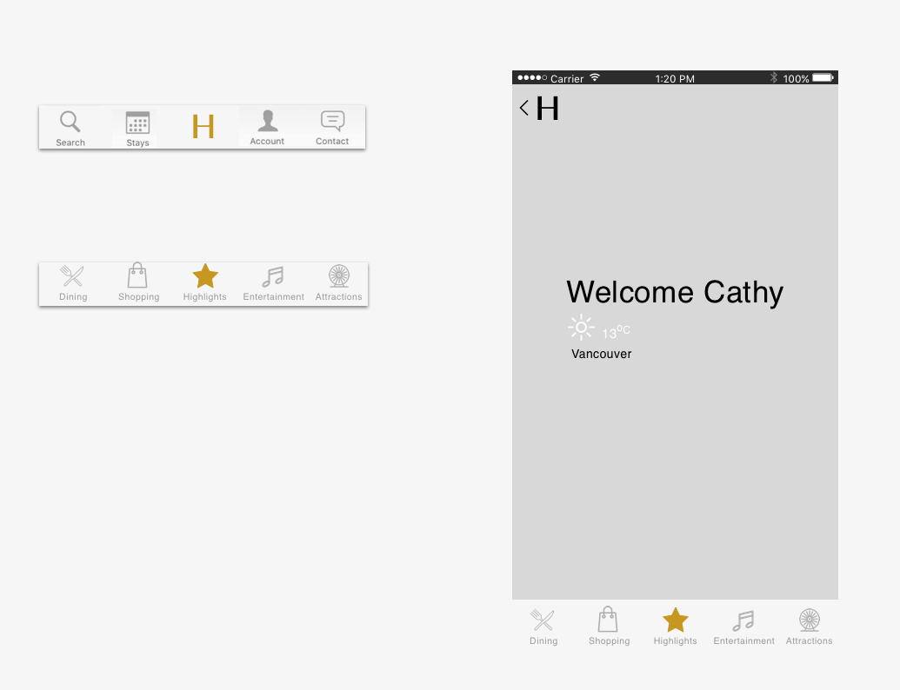
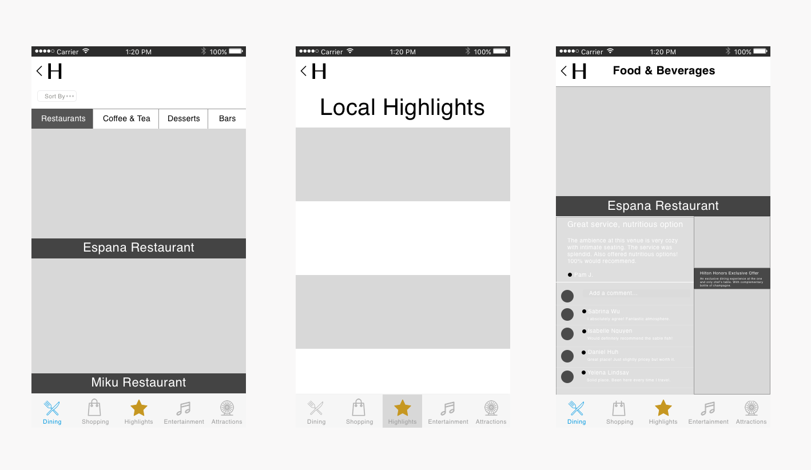
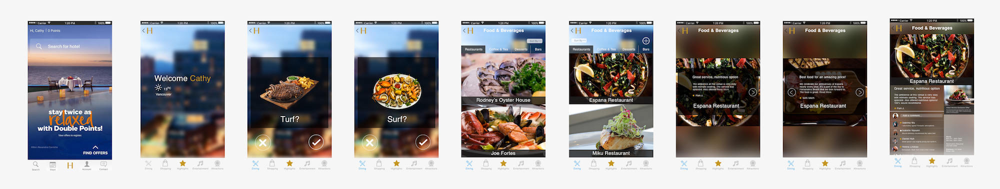
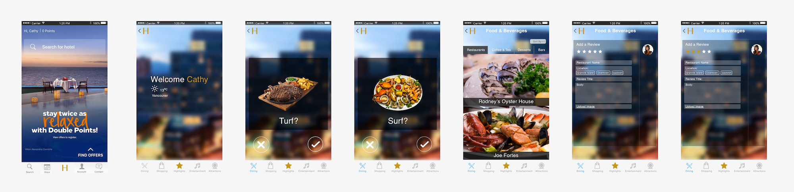
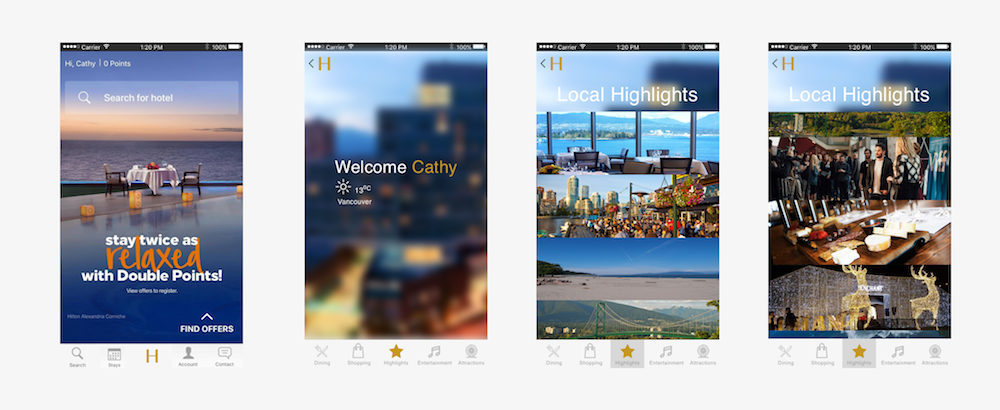

Type: A concept feature added to the Hilton Honors App
Role: Designer
Timeline: September 2017
Overview: The Hilton Hospitality Hackathon aimed to intersect the evolving
landscape in hospitality with technological innovations. The challenge was to build a B2B or B2C
hospitality soution that deliver a frictionless or personalized experience or harness data and use products to
deliver meaningful solutions for guests. This prompted us to tailor travel directly at the customer’s preferences:
innovations that deliver personalization are priceless.
Since I was one of few designers on the team, I was able to touch almost every part of the product and have my designs realized and executed.
It was a really special experience working so closely with the team under a fixed time schedule and learning from the other designers to come
up with a final design concept that all of us were proud of.
Persona
Cathy is a college student from San Francisco, California. She loves to travel. She’s never been to Vancouver, Canada but is deciding to visit there for the first time on vacation.
When she visits, she wants to be fully immersed in Vancouver culture, eat and see like the locals. She searched on Google and booked a Hilton hotel in Downtown Vancouver,
the heart of Vancouver’s localities.
Motivations/Interests:
- Likes to stay at Hilton Hotels because she is a Hilton Honors member
- Loves to travel to new places
- Adventurous and likes to try new things
Pain Points:
- Does not like to look like a tourist
- Quite shy
- Does not like to be unprepared for anything
- Indecisive when there are a lot of options
Problem
Many people,like Cathy, who travel to new places, want to be fully immersed in the local culture and live like a local, but cannot do that because:
1) They find it awkward to go up to local strangers.
2) Information on the internet usually has mixed reviews.
Ideation
From Google surveys that we sent out to gauge different travelers' opinions, we then compiled together valuable information that would help us determine what features to implement and add.
From there, we decided that our target audience would be Hilton Honors Members to create benefits that were selective and enticing at different levels. This would create a "want" that would entice users to be Honors members versus staying guests.
Solution Space
Idea 1: Calendar Sync
The goal of the calendar sync is for Hilton Honors app users to sync their Google Calendar or Microsoft Outlook Calendar to the app.
The HH app will filter out events according to the users' schedules.
- Guests can get access to all the events and highlights around the neighborhood that fit their schedules.
- Guests can click on specific events for pictures and details.
Idea 2: Hilton Honors Highlights + Recommendations
The target audience of this feature is Hilton Honors members: HH members want a unique community to connect with and a unique local experience.
The goal of the Hilton Honors Highlights + Recommendations feature is to create a community between loyal and frequent HH travelers on the HH App.
- Guests can find past and current experiences by other HH members.
- Guests cpersonalize their visit and share their experiences with others.
User Testing
From 6 user testings, we came up with some key findings.
Final Iterations
Idea 1: Calendar Sync
Referencing the existing features in the Hilton Honors app, we created similar screens to allow users to sync their Google Calender or Microsoft Outlook calender to their account.
Idea 2: Hilton Honors Highlights + Recommendations
We wanted an entry point that was personal and eyecatching to the user. We decided on a gold "H" placed on the bottom bar of the Hilton app. When clicked, a welcome page specific to the user will pop up that will include the location that the user is in and surrounding weather conditions. We wanted the users to be fully immersed in our app so we included tabs such as Dining, Shopping, Highlights, Entertainment, and Attractions.
For our Local Highlights and reviews features, we wanted to make sure that users could not only reference one review but could also see multiple reviews at once as an overview.
Final Iterations Flow
Personalized Dining Preferences --> Reviews
Option 1: View Reviews
Option 2: Add a Review
Local Highlights
Reflections
This hackathon challenge was fast paced, yet rewarding, allowing me to experience how much of an impact technology has on hospitality. Being my first hackathon, I was proud that I could execute all steps of the user experience from research to user teseting to visual design and all under a restricted time frame.